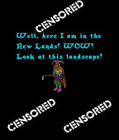
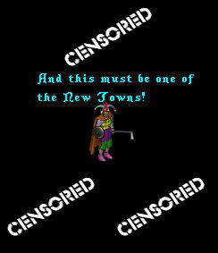
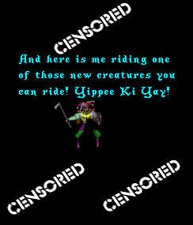
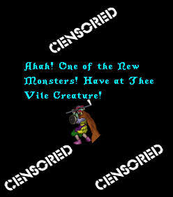
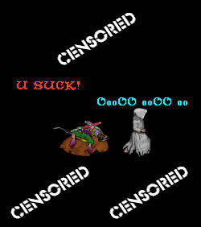

Special Episode: ImaNewbie visits the Second Age Beta and brings you back these *NDA Approved* screenshots of the wonders you can expect to see in T2A!





Note from Tryon: Now who says OSI isn't flexible when it comes to allowing people
like me to bring you all the latest information about their new games?